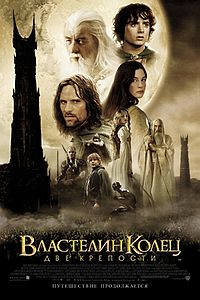
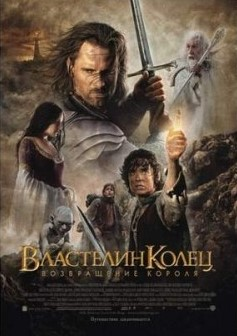

История создания
Изначально Толкин не собирался писать продолжение к "Хоббиту". Однако 15 ноября 1937 года во время обеда со Стэнли Анвином, владельцем издательства Allen & Unwin, впервые опубликовавшего "Хоббита", Толкин получил предложение представить для рассмотрения другие произведения. Рецензент издательства отклонил присланный "Сильмариллион", хотя отозвался о нём положительно. Ободрённый этим, Толкин начал писать продолжение "Хоббита" и уже 16 декабря 1937 года в письме к издателю сообщил о первой главе новой книги.
В декабре 1937 года Толкин начал "нового Хоббита". После нескольких неудачных попыток история начала набирать обороты, из простого продолжения "Хоббита" превратившись скорее в продолжение неопубликованного "Сильмариллиона". Замысел первой главы возник сразу в готовом виде, хотя причины исчезновения Бильбо, идея о важности Кольца Всевластья и название романа прояснились только к весне 1938 года. Сначала Толкин хотел написать ещё один рассказ, в котором Бильбо, истратив все свои сокровища, пустился в новые приключения, но, вспомнив кольцо и его силу, решил вместо этого написать о нём. В начале главным героем был Бильбо, но потом автор решил, что история слишком серьёзная для такого комичного и весёлого персонажа. Толкин рассматривал возможность отправить в путешествие сына Бильбо, но возникали вопросы: где была его жена? Как Бильбо отпустил сына в столь опасное путешествие? В итоге Толкин решил продолжить традицию древнегреческих легенд, в которых артефакт, обладающий магической силой, получает племянник главного героя. Так возник хоббит Фродо Бэггинс
Сюжет
"Братство кольца"

Хоббит Бильбо Бэггинс, главный герой повести "Хоббит", достигнув почтенного возраста 111 лет, уходит на покой и оставляет племяннику Фродо волшебное кольцо, делающее всякого своего носителя невидимым. От мага Гэндальфа Фродо узнаёт, что ему досталось не простое кольцо, а само Кольцо Всевластья, творение тёмного властелина Саурона, врага свободных народов Средиземья из страны Мордор, созданное, чтобы подчинить себе все прочие волшебные кольца. Кольцо обладает собственной волей и способно продлевать жизнь владельца, одновременно порабощая его, искажать помыслы и вызывать у него желание обладать Кольцом. С помощью Кольца Саурон, побеждённый много лет назад, может вернуть себе утерянную силу. Уничтожить Кольцо можно только одним способом — сбросив его в жерло Огненной Горы Ородруин в Мордоре, где оно и было выковано...
"Две крепости"
...На оставшихся членов Братства нападают орки и гоблины, Боромир героически погибает в бою, а Мерри и Пиппин попадают в плен к врагам. Арагорн, Леголас и Гимли решают отправиться в погоню за орками, чтобы спасти хоббитов, тем самым оставляя Фродо и Сэма одних идти на выполнение задания. Отряд орков, похитивших хоббитов, смешанный: часть гоблинов явились с севера (видимо, из Мории) с целью отомстить Братству, часть орков служат Саурону, а часть — Саруману. Они ссорятся, решая, к которому из повелителей нести пленников, в конце концов побеждают орки Сарумана, отряд идёт на запад к Изенгарду. Через несколько дней их настигают всадники Рохана — рохирримы. В стычке с всадниками орочий отряд истреблён, а Мерри и Пиппину удаётся сбежать в лес Фангорн, где они встречают энтов и их предводителя Древоборода, хранителя леса. Хоббитам удаётся склонить его и других энтов к выступлению против Сарумана, который уничтожает лес вокруг своей крепости Изенгард и готовит наступление на Рохан...
"Возвращение короля"
...Гэндальф с Пиппином едет в Гондор — предупредить жителей Минас-Тирита о грядущем наступлении войск Мордора. Он застаёт Денетора, наместника Гондора, в трауре по Боромиру. Теоден ведёт роханское войско на помощь Гондору, с войском тайно отправляется Мерри, нарушив запрет короля. Арагорн вместе с Леголасом и Гимли проходит по тайной тропе и призывает на помощь Войско Мёртвых — призраков людей, когда-то нарушивших клятву предку Арагорна Исильдуру и не знающих с тех пор покоя. Орки из Мордора захватили Осгилиат и приступили к штурму Минас-Тирита. После того, как младший сын Денетора, Фарамир, был тяжело ранен при защите Осгилиата, наместник, увидев в палантир огромное мордорское войско, решает, что дальнейшее сопротивление бессмысленно, и в безумии пытается сжечь себя вместе с сыном. Гэндальфу, которого едва успел предупредить Пиппин, удалось вытащить из костра Фарамира, но Денетор совершает самосожжение. Гэндальф берёт на себя руководство обороной города; в это же время к стенам города подходит долгожданное роханское подкрепление Теодена...